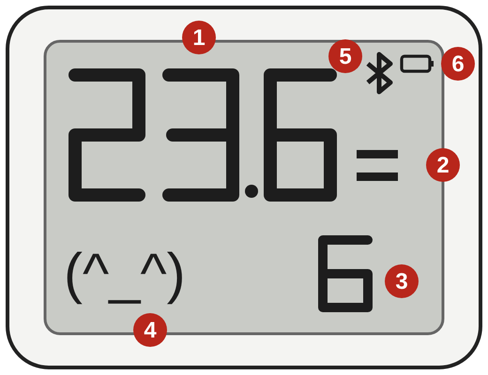
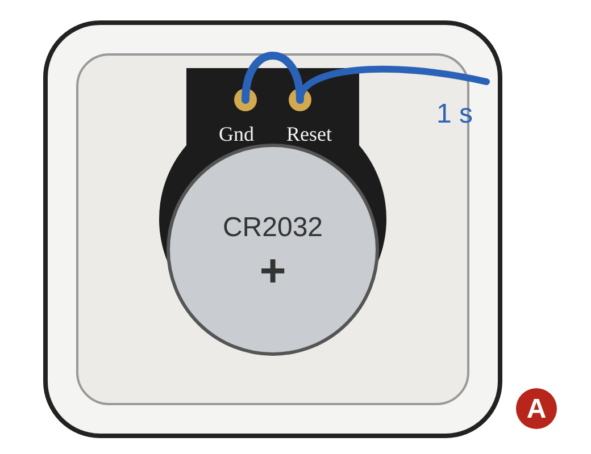
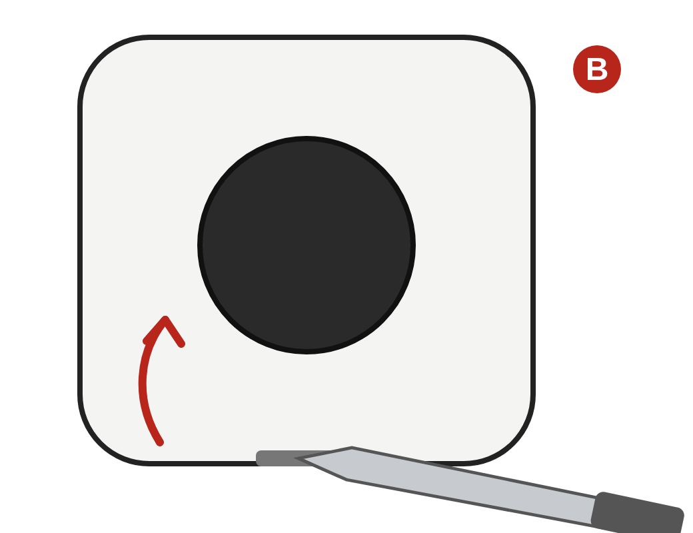

Bruksanvisning / User guide
Én A4-side, norsk og engelsk. Versjon 1.1, firmware 0.6.0.
Åpne PDF / Open PDFTil appen / To the app

1 døgngrader, 2 vilt (–) eller restaurant (=), 3 temperatur, 4 smilefjes, 5 Bluetooth, 6 batteri.

A Ny periode: binders fra Reset til Gnd i 1 sekund. Batteriet med + opp.

B Lirk av bakplaten med en flat skrutrekker i sporet nederst.